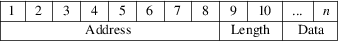
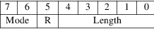

srec_brecord - Freescale MC68EZ328 Dragonball bootstrap record format
This data format is understood by Freescale MC68EZ328 Dragonball series processors on their internal UART.
Lines
Each line contains hexadecimal data, each byte represented
by two hexadecimal nybbles in upper case. Characters not in
this set, but larger than 0x30 (e.g. lower case) will be
ignored, less than 0x30 (e.g. CR or LF) are considered
record terminators. Comments are problematic; don’t
try this at home.
Fields
Each line contains a 4-byte address (big endian), a 1-byte
length-and-mode, and then data bytes as dictated by the
length. There is no checksum. A zero length record is
an execution start address record, non-zero length records
are data.

The length-and-mode byte is formatted as follows:

|
Mode |
These bits are ignored by SRecord in input (00 = bytes, 01 = half words, 10 is reserved, 11 = long words). These bits are always zero on output by SRecord. | ||
|
R |
This bit indicates a data read rather than a data write; SRecord does not accept input files with this bit set, and will not set it on output. | ||
|
Length |
The length of the records data bytes. It does not include the address or length bytes. The maximum payload of a record is 31 bytes of data. |
Size
Multiplier
In general, binary data will expand in sized by at least
2.35 times when represented with this format.
Here is an example b-record format file. It contains the data “Hello, World” to be loaded at address 0.
000000000D48656C6C6F2C20576F726C640A
http://www.freescale.com/files/32bit/doc/ref_manual/MC68VZ328UM.pdf
srec_cat
version 1.65
Copyright (C) 1998, 1999, 2000, 2001, 2002, 2003, 2004,
2005, 2006, 2007, 2008, 2009, 2010, 2011, 2012, 2013, 2014,
2018, 2019, 2022 Peter Miller
The srec_cat program comes with ABSOLUTELY NO WARRANTY; for details use the ’srec_cat -VERSion License’ command. This is free software and you are welcome to redistribute it under certain conditions; for details use the ’srec_cat -VERSion License’ command.